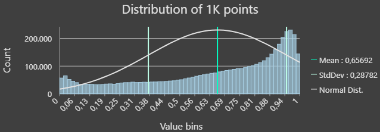
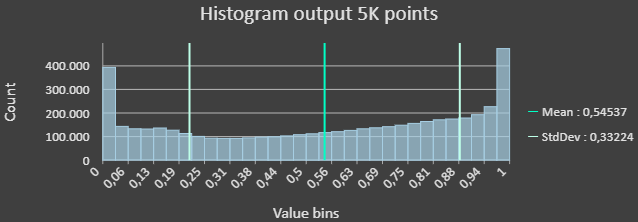
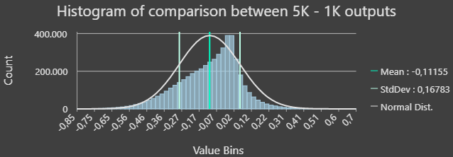

Results and Performance Analysis
All models are a reasonable simplification of the reality, which often represent rather complex convergence of natural phenomena. To model landslide susceptibility several assumptions and simplifications are taken regarding the environmental factors like slope, land curvature, plan, and aspect (orientation of slope), vegetation, land cover and use, lithology, geological faults, water bodies, landslides inventories, among others. Further assumptions regarding the processing of data and algorithms applied are also commonly made to reach an output. To assess the quality of the results validation techniques are applied, usually involving dividing the input dataset into two groups, one for training the model and the other for validating the output obtained. Performance in this case is evaluated through Overall Accuracy, depicting the percentage of the testing dataset correctly predicted as either a landslide-susceptible or not a landslide-susceptible area.
After the Processing steps a Random Forest model (Supervised learning algorithm) was implemented in order to classify the Landslide and Non-Landslide zones (LZ and NLZ). In this section the different approaches used and their associated results will be shown, starting from the 1K - 1000 points approach explanation to continue with the 5K - 5000 points approach.
1K - 1000 points approach
In this first trial, a total ammount of one thousand points and a train-test ratio of 70-30% was considered, for 700 total points for training the model and 300 points for testing it. The points were sampled in the following way:
- LZ - Train: 350 points
- NLZ - Train: 350 points
- LZ - Test: 150 points
- NLZ - Test: 150 points
The Overall Accuracy reached was 72%
| Class | NLZ | LZ | UA | PA |
|---|---|---|---|---|
| NLZ | 74 | 13 | 85% | 52% |
| LZ | 68 | 136 | 67% | 91% |

Associated histogram:
The following histogram allows us to understand the distribution of this first output.
5K - 5000 points approach
After different trials, an adequate performance was reached with a five thousand point resolution and a relative distribution in between the LZ and NLZ areas.
- Train-test Split: 70-30% (same as 1K)
- Total ammount of points: 5000
- The relative distribution of areas between LZ and NLZ (~32-68%) was considered in order to distribute the points
| Class of Area | % surface | Assigning by proportion | Train points | Test points |
|---|---|---|---|---|
| LZ | 32,40% | 1620 | 1134 | 486 |
| NLZ | 67,60% | 3380 | 2366 | 1014 |
| Total | 100% | 5000 | 3500 | 1500 |
It was considered absolutely relevant to try to distribute in an homogeneous way the points to cover in a similar way both classes (LZ/NLZ). I was also important to increment the number of points to cover more areas and in this way have a higher volume of comparisons in order to perform the classification.
Final overall accuracy of 80%
| Class | NLZ | LZ | UA | PA |
|---|---|---|---|---|
| NLZ | 747 | 93 | 89% | 79% |
| LZ | 197 | 388 | 66% | 81% |

Associated histogram:
The following histogram allows us to understand the distribution of this second output.
TIN model of 5K points output
As an extra output we have performed the Triangulated Irregular Network model of our second output (the one corresponding to the 5K points approach). This model fits with a mesh of triangles the different values of our output and it is a high quality output which may be used for precise analysis:

Susceptibility comparison between approaches
A comparison to understand which was the variation between the susceptibility levels determined between each approach was carried out. For this reason, it was necessary to compute the difference: Susc. level 5K output - Susc. level 1K output. The result of this analysis may be observed in the following map:

As it is possible to observe in the above map there are areas in which the variation with respect of the first output was relevant in terms of the disminution of the susceptibility level. This conclusion is possible to be observed in the following histogram:
